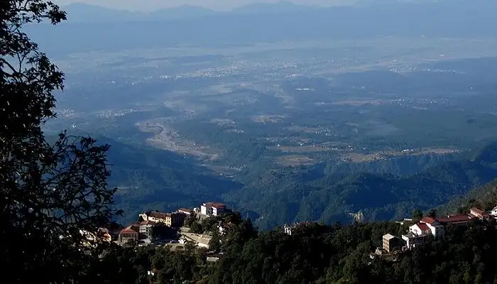
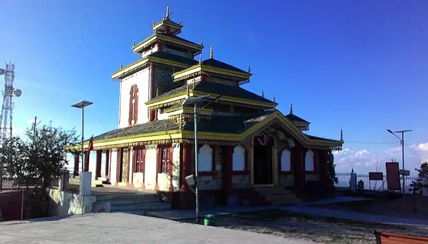
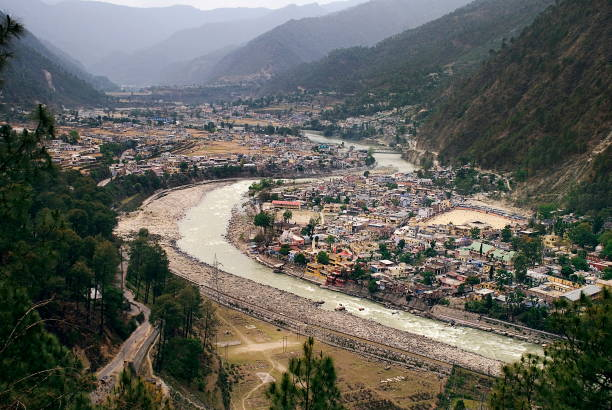
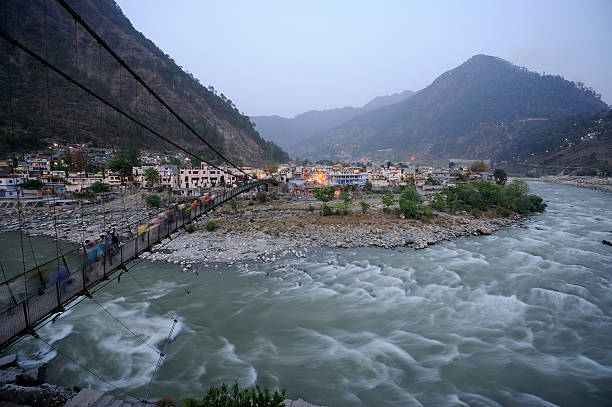
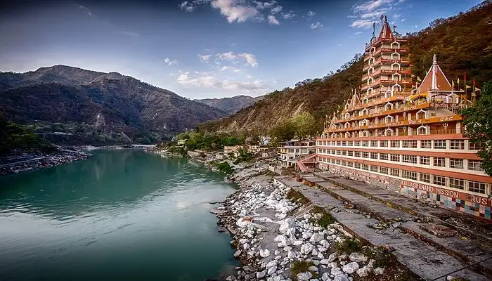

Most Beautifull Places To Visit In Uttarakhand For A Perfect Vacation

Boasting an enchanting view of the Himalayas and a cultural ethos that speaks of simplistic living amidst nature and harmony Uttarakhand is a land of sublime natural beauty. Indulge in the serene spirituality with the list of places to visit in Uttarakhand. From numerous cant-miss experiences that range from water sports to the ashrams where you can connect with your inner self. Uttarakhand has everything in store for any tourist who is daring enough to face the heights of the Himalayas, crazy enough to sail on the snow, and keen enough to explore themselves. With these magnificent places to explore in Uttarakhand, theres no reason you should be a part of the urban grind for more than 2 months at a stretch.
Top Places To Visit In Garhwal
Interested in visiting Garhwal? Here is a list of the best places to visit in Garhwal for a unique experience and a fun-filled vacation amid the snow-capped mountains and serene landscape. Experience heaven as we bring you the best places to visit in this piece of paradise nestled in Northern India. Take a look at the best Garhwal tourist places!
Dehradun – Picturesque Location– Surreal Land
Situated at the Himalayan foothills, Dehradun is one of the breathtaking places in Uttarakhand. Being the gateway to Mussoorie, Haridwar and Rishikesh, Dehradun offers a paradise for nature lovers. Imagine exploring Robber’s Cave with crystal-clear waters and simply dipping your toes in for a refreshment! While you are here, unwind and watch a stunning sunset. Go on a trek or try birdwatching for a more enthralling adventure. The natural beauty of the capital of Uttarakhand will leave you in awe.
Whether you’re an outdoor enthusiast or someone who loves a peaceful place, this Himalayan city will surely charm you. Make sure to visit all the offbeat places in Dehradun for a great experience.
Also Read: Places To Visit In Pauri Garhwal
Pauri Garhwal – Surreal Land

Pauri Garhwal is one of the most beautiful tourist places in Uttarakhand. It is known for its view of snow-covered Himalayan peaks and lush greenery. This place has a tranquil charm and is 1814m above sea level. It has a vast number of temples and other magnificent spots to view the sunset, and there are a lot of things to do around Pauri Garhwal. While you are here, make sure to explore all the places to visit in Pauri Garhwal for a memorable journey amidst the Himalayan ranges.
Also Read: Places To Visit In Pauri Garhwal
Tehri Garhwal – Spiritual Significance
Tehri Garhwal is a district in the beautiful hill state of Uttarakhand. The place is famous for its spiritual significance. There are many temples located all across the place. People also visit this mesmerizing place to enjoy beautiful views. The other major attractions include a massive lake and a dam. This place is also on top of the list for trek freaks as it offers countless trekking trails. There are numerous beautiful places to visit in Garhwal, and exploring them will surely give you a beautiful time with your family.
Also Read: Places To Visit In Tehri Garhwal
Chamoli – Adobe Of Gods
Chamoli is popularly known as the ‘abode of Gods’. It is famous for its shrines and temples and its connections with Hindu mythology and stories. This village also has rich historical significance. The village of Chamoli was the original source of the well-known Chipko movement. The richness of Garhwali traditions and the slower pace of rural life draw tourists to this location. If you enjoy thrilling outdoor activities, then this place is for you. Moreover, if you are a history buff and love to learn about past events and spend your days in a peaceful atmosphere, the village of Chamoli in Uttarakhand will surely give you an experience worth a lifetime!
Also Read: Places To Visit In Chamoli
Uttarkashi – Quaint Hill Town
Uttarkashi is one of the most popular tourist destinations because of its religious significance and is one of the city’s less-travelled areas. Two of the four sacred shrines associated with Hindu mythology are located on the religious site. This is not all; the entire place also boasts natural beauty and opportunities for trekking and other adventure activities. You can also visit the lakes here, which are in large numbers. This is one of the best places to visit in February in Uttarakhand. During your stay, make sure to explore all the places to visit in Uttarkashi.
Also Read: Places To Visit In Uttarkashi
Haridwar – Gateway To God
Haridwar is one of the seven holiest towns in Uttarakhand. Bathing in the holy Har Ki Pauri is said to absolve one of all sins. The renowned Ganga Aarti, which takes place every evening at the Har ki Pauri Ghat, is the main attraction in Haridwar.
Thousands of pilgrims across the country gather here to offer prayers to the Ganga River and to float diyas. Every twelve years, Haridwar, together with Ujjain, Nasik, and Allahabad, are the four cities that play host to the Kumbh Mela. This is also the location of the annual Kanwar Mela, which takes place in Saawan (rainy season). In addition, it serves as the entry point to Uttarakhand’s Char Dham and the starting point for several other popular tourist destinations, including Rishikesh and Devprayag. Outdoor enthusiasts can try all the places to visit in Haridwar.
Also Read: Places To Visit In Haridwar